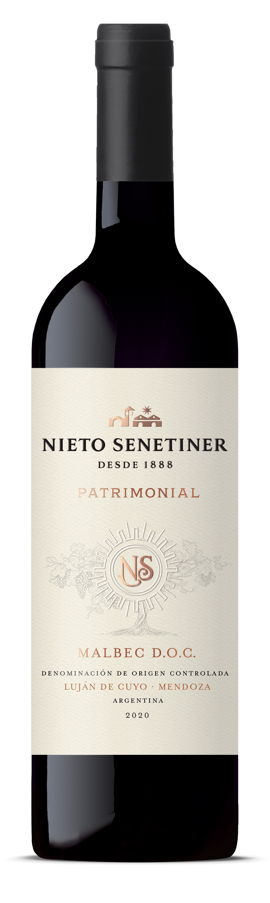
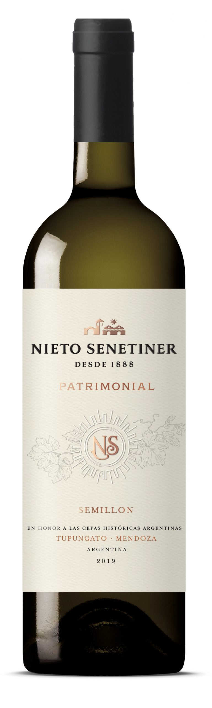
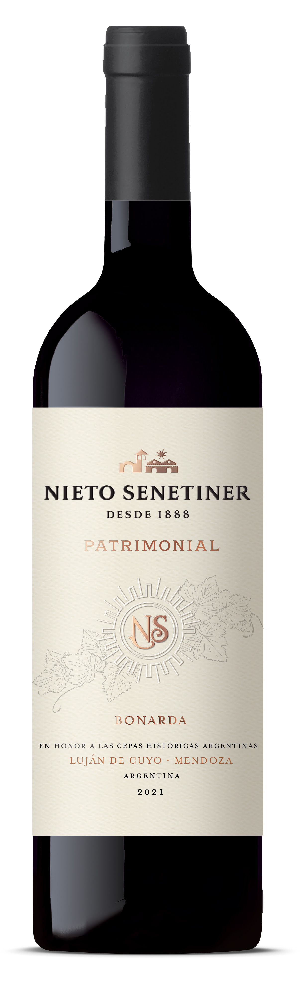

Nueva Linea de Bodega Nieto Senetiner: Patrimonial

Buenos Aires, Julio 2022 Bodega Nieto Senetiner presenta su nueva línea PATRIMONIAL como un homenaje a los varietales históricos que dieron origen a la vitivinicultura en Mendoza. Esta nueva línea está compuesta por vinos que ponen en valor el patrimonio de las marcas, expresan la tradición argentina y revalorizan cepas históricas.Nieto Senetiner, con más de 130 años de historia, ha explorado diversidad de cepas y terruños a lo largo de todos estos años. Es un referente en el desarrollo e investigación de cepas, es autoridad máxima en Bonarda en el país y ha sabido transmitir esta experiencia y conocimiento adquirido de generación en generación. Siempre en movimiento, la bodega lanza una línea de vinos que refleja ese recorrido, ese conocimiento, la trayectoria y la calidad que caracterizan a Nieto Senetiner y evoluciona junto al consumidor, proponiendo vinos innovadores basados en su historia.
Comenzamos preguntándole como comenzó su relación con el mundo del vino y nos conto que en un principio, cuando salió del secundario estaba un poco confundido sobre que carrera elegir, pero siempre le atrajo el mundo de las de bodegas y por eso se decidió finalmente comenzar en la universidad la carrera de enología. Nos contó que ya desde el primer año quiso empezar a trabajar en el mundo del vino, así que allá por el 2006 comenzó como pasante en Bodegas López (donde actualmente trabaja como enólogo). Relata que así se le hizo mucho más fácil la carrera ya que podía estudiar y trabajar de lo que le gustaba, toda la teoría que aprendía en la universidad podía verlo en la práctica en la bodega, cuenta fascinado.
La línea está compuesta por los vinos:
- Nieto Senetiner Patrimonial Malbec D.O.C. 2020
- Nieto Senetiner Patrimonial Semillón 2019
- Nieto Senetiner Patrimonial Bonarda 2021, lanzamiento 2022
- Nieto Senetiner Patrimonial Criolla Grande 2022, lanzamiento 2022
Al respecto Santiago Mayorga, enólogo de la bodega, expresó: “Siento que hay un gran valor en rescatar la herencia y patrimonio varietal de Mendoza, que es de larga data. Nuestra idea es expresar su potencial enológico en ejemplares de alta calidad, sumado a la autenticidad de cada vino. Elegimos cuatro varietales muy distintos y auténticos para esta línea: Malbec D.O.C., Semillón, Bonarda y Criolla Grande. Cada uno en su estilo habla de innovación.”
Nieto Senetiner Patrimonial Malbec D.O.C. 2020 Vino icónico de la bodega, es 100% Malbec, con origen en Luján de Cuyo, Mendoza, con crianza en madera durante doce meses y guarda en botella también por doce meses. Un vino de color intenso, con reflejos violáceos. Expresa frutos rojos como cerezas y ciruelas, confituras y violetas. Aparecen algunas notas de cacao amargo aportadas por la madera, muy bien integradas. En boca se presenta con taninos dulces, entrada suave y largo final.Este Malbec de calidad superior es elaborado y supervisado bajo estrictas reglas reguladas por la D.O.C. Luján de Cuyo, una de las siete etiquetas argentinas elaboradas bajo esta normativa.Según Santiago Mayorga “Nuestro Malbec D.O.C. honra a la primera zona de Luján de Cuyo, donde nace el Malbec en Argentina. Son viñedos de entre 10 a 100 años de antigüedad, tratados con un sistema de poda especial y con rendimientos menores a 70 hl/ha, con lo cual logran una madurez adecuada y representan al terroir de Luján de Cuyo”.
Nieto Senetiner Patrimonial Semillón 2019 Se trata de una versión renovada de un clásico de la Bodega. Un vino 100% Semillón, con origen en Tupungato, Valle de Uco, Mendoza. El 50% del vino es añejado en madera de primero, segundo y tercer uso durante diez meses. Se trata de un vino de color amarillo verdoso que expresa delicadas notas de frutas blancas y cítricos como pomelo blanco. Aparecen flores de acacia y hierbas frescas, terminando con una nota mineral. La madera está muy integrada, aportándole volumen y textura en boca. Es un vino fresco y complejo, de largo final.En la mirada de Santiago Mayorga “El Semillón solía ser la segunda variedad blanca más plantada, además de ser la compañera del Malbec en llegar a Argentina en el siglo XIX. Es una cepa muy especial, que requiere un particular cuidado en el manejo del viñedo y en la cosecha ya que posee una piel fina y es de maduración tardía. En nuestro caso, elaboramos una versión muy refinada, con algo de fermentación en barricas de roble francés, logrando un blanco elegante, gastronómico y de excelente potencial de guarda.”
Nieto Senetiner Patrimonial Bonarda 2021 es un vino 100% Bonarda, con origen en Luján de Cuyo, Mendoza, con crianza en madera por ocho meses. Es un vino de color rojo rubí con destellos violáceos. En nariz, en la primera capa aromática, se destacan notas de frutos rojos ácidos combinadas con aromas florales. Luego aparecen notas de madera. En boca es fresco, untuoso, armónico y balanceado, con delicados taninos que le brindan elegancia.El enólogo Roberto González expresa: “En este Bonarda, encontramos la fiel expresión de Agrelo, Luján de Cuyo. En cuanto a estilo, podemos ubicarlo entre los vinos del nuevo mundo, donde resalta la concentración de color, pero sin perder la elegancia y la fineza de su acidez. El manejo del viñedo es clave para maximizar la calidad de esta variedad.”
Finalmente el Nieto Senetiner Patrimonial Criolla Grande 2022: en los próximos meses se realizará el lanzamiento de este vino que completa la Línea Patrimonial y se encuentra aún reposando en tanque.